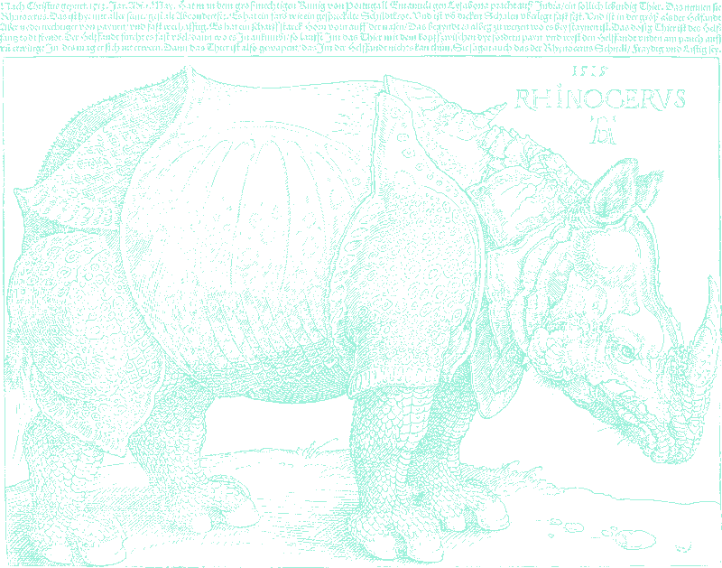

≡ ABOUT / SUPPLiER iNFO ≡
+========================================================+ | * SUPPLiER ...... iL1A * STATUS .... online | | * CLASS ......... student * MOOD ...... wired | | * LOCATiON ...... moscow, ru * UPTiME .... 19 years | | * WEAPON ........ llm + term * RATiON .... series | +========================================================+

Илья. Девятнадцать, Москва, студент. Смотрю фильмы и сериалы больше, чем положено человеку с дедлайнами. Копаюсь в железе и в нейронках — билжу с их помощью всякую дичь, иногда она даже работает.
Люблю дарк-фентези и пиксель-арт: рыцари в ржавых доспехах, башни на фоне большой луны, крупный пиксель и два цвета. Эта страница — попытка поселить всё это в одном месте. Гравюры тут настоящие: Дюрер, Гольбейн, Доре — пятьсот лет, пережатые в один бит и подсвеченные фосфором.
≡ LiKES // DiSLiKES ≡
✟ LiKES
- дарк-фентези без хэппи-энда
- пиксель-арт, где видно каждый пиксель
- сериал на всю ночь вместо сна
- запах новой железки
- когда нейронка с первого раза поняла
- Москва в три ночи, когда никого нет
✟ DiSLiKES
- «смотри с второго сезона, там начинается»
- финалы сериалов (почти все)
- термопаста на видеокарте
- «ии заберёт работу» как тема для разговора
- пары в 8:30
- скруглённые углы
≡ iNTERESTS // MODULES ≡
FiLMS
- blade runner 2049
- the lighthouse
- the northman
- nosferatu
- stalker
SERiES
- arcane
- severance
- true detective s1
- dark
- the last of us
Ai
- claude code
- qwen-image
- local llms
- comfyui
- vibe coding at 3am
iRON
- видеокарты
- старые платы
- механические клавы
- что угодно с авито
- термопаста

rhinocervs · dürer 1515 · armoured, like a good pc case
≡ BUiLDS // ARTiFACTS ≡
+--------------------------------------------------------+ | things assembled with the help of machines | +--------------------------------------------------------+
▪ LiFE ADD-ON [ this page ]
монохромный nfo-зин × bios. html + css + js, ни одного фреймворка. гравюры — public domain, дизеринг — imagemagick, код — claude. source »
монохромный nfo-зин × bios. html + css + js, ни одного фреймворка. гравюры — public domain, дизеринг — imagemagick, код — claude. source »
▪ [ REDACTED ] [ wip ]
следующий артефакт ещё не раскопан. следите за release notes.
следующий артефакт ещё не раскопан. следите за release notes.
≡ RELEASE NOTES // JOURNAL ≡
+--------------------------------------------------------+ | R E L E A S E N O T E S | +--------------------------------------------------------+
▪ mmxxvi.ix.21 v2.1: генерёнка выброшена. теперь тут дюрер, гольбейн и доре в один бит, а сверху — bios-терминал. фосфор включён.
▪ mmxxvi.ix.21 страница вышла в сеть. neocities не пустил по геолокации — живём на github pages.
▪ mmxxvi.ix.20 v1: неоновый geocities-вариант отправлен в /dev/null. монохром победил.
≡ GALLERY // PLATES ≡


dürer · doré · holbein · flammarion · 1 bit · click to enlarge
≡ MEMBER iNFO // GUESTBOOK ≡
+--------------------------------------------------------+ | sign the book below · or perish quietly | +--------------------------------------------------------+